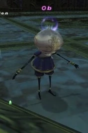

Level 75 reference · Zenith rules
|
Job: Varies |
 |

| Zone | Level | Drops | Steal | Spawns |
Notes |
|---|---|---|---|---|---|
|
1 |
||||
|
HP = Detects Low HP; M = Detects Magic; Sc = Follows by Scent; T(S) = True-sight; T(H) = True-hearing JA = Detects job abilities; WS = Detects weaponskills; Z(D) = Asleep in Daytime; Z(N) = Asleep at Nighttime | |||||

Notes:
- Spawned by trading Cog Lubricant to ??? in Alzadaal Undersea Ruins G-7 at the Bhaflau Remnants map. (SE Porter)
- When checked, the ??? point says "The ground here is slimy to the touch..."
- Can be Gravitied, Paralyzed, Bound, and Slowed. All hit without a problem. Seems to be immune to Silence.
- Recommended having a Puppetmaster use maneuvers to trigger a non-Harlequin frame for a much easier kill.
- Harlequin Frame is undoubtedly the most difficult to deal with, as it has quick cast spells, does not stay at range, has access to Magic Mortar and Slapstick, seems to have an innate resistance to both physical and magical damage, and seems to gain a very potent Regain trait at lower HP.
- Recommended having a Puppetmaster use maneuvers to trigger a non-Harlequin frame for a much easier kill.
- Ob will change its frame based on the maneuvers used by a Puppetmaster present. The Puppetmaster has to be in the same alliance. The Puppetmaster can also be subjob but requiring more (about 2-3) maneuvers to change it's frame.
- Wind Maneuver or Thunder Maneuver will trigger Ob to change into Sharpshot.
- Fire Maneuver or Earth Maneuver will trigger Ob to change into Valoredge.
- Ice Maneuver or Water Maneuver or Dark Maneuver will trigger Ob to change into Stormwaker.
- Ob will change its frame based on the maneuvers used by a Puppetmaster present. The Puppetmaster has to be in the same alliance. The Puppetmaster can also be subjob but requiring more (about 2-3) maneuvers to change it's frame.
- Harlequin
- Uses Slapstick, Knockout, Magic Mortar (very long range and ignores shadows).
- Magic Mortar, especially when used by the Harlequin frame, seems to be the strongest overall weapon skill. When Ob is at low HP, it has been known to deal upwards of 2000 damage, at range, and ignoring shadows.
- Harlequin Ob has access to Dia, Blind, Slow, Paralyze, and can Cure IV itself.
- Harlequin
- Stormwaker
- Uses Slapstick, Knockout, Magic Mortar (very long range and ignores shadows)
- Will not move into melee range until it's <66% HP. Verification Needed
- Has access to all tier IV black magic spells, tier III black magic "-ga" spells, Ancient Magic, Stun, Sleep II, Sleepga II the "Elemental enfeebles" (Drown, Choke, etc...), Blaze Spikes, and the same enfeebles as the Harlequin. It does not seem to cure itself.
- Stormwaker
- Valoredge
- Uses String Clipper, Chimera Ripper, Cannibal Blade, Bone Crusher
- Valoredge
- Sharpshot
- Uses Arcuballista (ranged), Daze (ranged), Armor Piercer (ranged)
- Will not move into melee range until it's <66% HP.
- Sharpshot
- Soloable by 75RDM/NIN using a standard Gravity kiting method. Utsusemi is very important, as Armor Piercer has been known to do upwards of 1700 damage.
- Duoable by 75PLD/NIN and 75PUP/NIN using Soulsoother.
Adapted from Eden Wiki: Ob · Contributors and history · CC BY-SA 4.0. Revision 44732. Layout, links and optional background text adapted for Zenith.